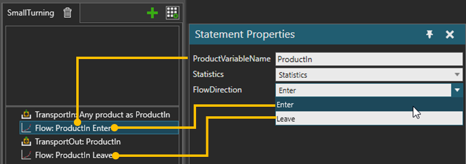

A Flow statement allows you to update statistics behavior and record given product(s) transferring in or out of the component container. If ProductVariableName is a list, all products in the list are recorded at once.

| Name | Description |
| ProductVariableName | The name of the product variable in the process |
| Statistics | Statistics behavior of the component |
| FlowDirection | If Enter, indicates the product is transferred into the process. If Leave, indicates the product is transferred out from the process. |